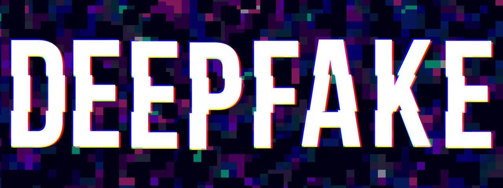

Steam recebe 5 novos jogos grátis

Para aqueles que estão sempre em busca de novas aventuras sem custo adicional, a Steam acaba de enriquecer seu catálogo com cinco novas adições gratuitas. Estes títulos, variando em gênero e estilo, prometem oferecer experiências únicas, desde viagens a mundos surrealistas e coloridos até desafios intensos em cenários pós-apocalípticos.
Ler mais
Inteligência artificial: impactos, consequências e estratégias

Em primeiro lugar, é fundamental manter a calma. Lembre-se que é possível provar que a imagem ou vídeo foram adulterados. Procure a polícia, registre um boletim de ocorrência e tente evitar o acompanhamento constante das redes sociais para preservar a saúde mental.
A assistência de um profissional especializado em direito digital é imprescindível. É permitido ainda registrar o material como prova, seja por meio de plataformas on-line de validação, como a Verifact e OriginalMy, ou por uma ata notarial em um cartório.
Ler mais
Attack on Titan ganha novo jogo grátos feito por fã na UE5; confira
Desde que Unreal Engine 5 foi liberada, nós temos visto diversos projetos interessantes realizados com ela, tanto por profissionais como por quem ainda está aprendendo a usar a ferramenta. Desta vez, um YouTuber conhecido como Swammy postou o trailer final de um jogo inspirado em Attack on Titan, no qual ele está trabalhando há algum tempo.
Ler mais